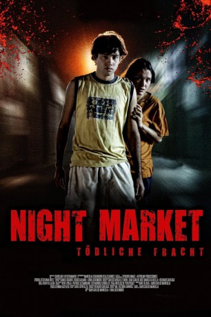

#2650 Night Market - Tödliche Fracht
Alternativ: 7 Boxes (Englischer Titel)
 
 IMDB-Wertung: 7.2 / 10
IMDB-Wertung: 7.2 / 10  Metascore: 72
Metascore: 72 
Wie viele junge Menschen, träumt auch der 17-jährige Victor (Celso Franco), der seinen kargen Lebensunterhalt als Laufbursche auf dem Markt erwirtschaftet, davon, irgendwann einmal ein besseres Leben führen zu können. Als er eines Tages das vielversprechende Angebot erhält, für die Auslieferungen von sieben Kisten, deren Inhalt er nicht kennt, 100 Dollar zu kassieren, nimmt er den lukrativen Auftrag sofort an. Doch das Ganze stellt sich schnell als schwieriger heraus als anfangs gedacht. Denn neben dem logistischen Problem, die sieben Kisten durch die acht Straßenblöcke zum Zielpunkt zu transportieren, machen ihm allerhand Leute das Leben schwer - darunter auch die Polizei. Doch Victor weiß: Wenn er seine Ladung nicht pünktlich ans Ziel bringt, wird ihn sein Auftraggeber Don Dario (Paletita) nicht so leicht davon kommen lassen.
Jahr: 2012
Dauer: 105 Minuten
FSK: 12
Land: Paraguay Studio: Intergroove MediaTonspuren:
Untertitel:
Auflösung: 1080p (1920x1064) Größe: 5099 MB
Genre: Thriller
Regisseur: Juan Carlos Maneglia, Tana Schémbori
Drehbuch: Juan Carlos Maneglia, Tito Chamorro, Tana Schémbori
Soundtrack: Fran Villalba
Darsteller:
- Lali Gonzalez als Liz
- Celso Franco als Víctor
- Víctor Sosa als Nelson
- Nico García als Luis
- Paletita als Darío
- Manu Portillo als Oficial Servián
- Mario Toñanez als Sargento Osorio
- Nelly Davalos als Tamara
- Roberto Cardozo als Gus
- Jin Hyuk Johnny Kim als Jim
- Luis Gutiérrez als Jorge
- Liliana Alvarez als Alejandra
- Katia García als Leti Sanchez
- Atil Closs als Esteban
- Junior Rodriguez als Tano
- Stephen Jang als Don Chan
- Ever Enciso als Carretillero 1
- Arturo Arellano als Carretillero 2
- Fernando Fleitas als Carretillero 3
- Pedro Armoa als Carretillero 4
- Liz Mendez als Carretillero 5
- Lorena Vera als Carretillero 6
- Alicia Guerra als Farmacéutica
- Tito Jara Roman als Comisario
- Beto Ayala als Drag Queen
- Mirian Sienra als Señora Inicio
- Roger Bernalve als Panchero
- Rayam Mussi als Bombero
- Manuel Wilder als Vagabundo
- Daniel Gonzalez als Guardia Estacionamiento
- Maria Noelia Diaz als Esposa de Nelson
- Denis Amarilla als Bebé de Nelson
- Jose Alegre als Raterito 1
- Emilio Herrera als Raterito 2
- Ruben Flecha als Chofer Camión
- Martín Oviedo als Cambista
- Jorge Baez als Policía
- Diego Romero als Policía
- Hugo Robles als Policía
- Mauricio Martinez als Policía
- Hugo Cataldo als Policía
- Dario Alegre als Policía
- Angel Delgado als Policía
- Esteban Martínez als Policía
- Denise Zoeller als Doctora
- Luz Chaparro als Cocinera
- Jorge Monges als Ayudante Carnicería
- Jose Zarate als Ayudante Carnicería
- Fiorella Migliore als Diva TV
- Luis Molinas als Héroe TV
Datei: X:\2012(N-Z)\Night Market - Tödliche Fracht (2012, FSK12, 1920x1064).mkv seit 30.11.2015
Festplatte: HD 2012(N-Z)-2013(A-H)
 Es gibt insgesamt 138 Filme in der Gruppe '2012(N-Z)'
Es gibt insgesamt 138 Filme in der Gruppe '2012(N-Z)'